O que são as Toadas?
As toadas são composições musicais feitas especificamente para a apresentação dos Bois-Bumbás Caprichoso e Garantido. Elas versam sobre o tema ou a homenagem escolhidos pela agremiação para o Festival Folclórico de Parintins.
Mais do que música, elas são interpretações das crenças, cultura, história e vivência da população parintinense; todas as toadas emergem a voz do povo.
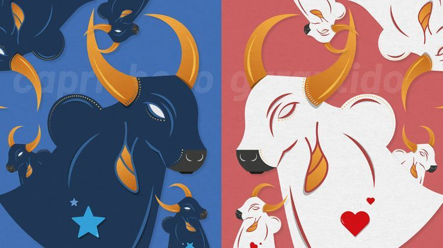
A Toada sob a ótica dos Gêneros Textuais
Segundo Bakhtin, os gêneros do discurso são tipos relativamente estáveis de enunciados determinados social e historicamente.
- Gêneros Primários: Surgem em situações espontâneas do cotidiano.
- Gêneros Secundários: Aparecem em contextos complexos e organizados, como o campo artístico.
Resgate Cultural e Denúncia Social
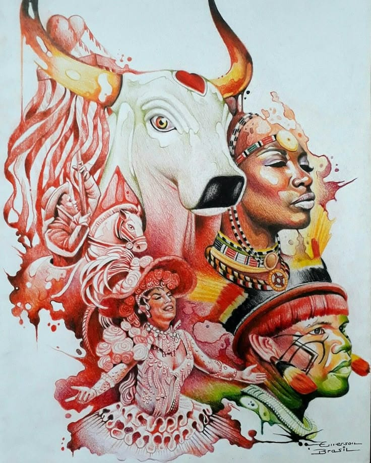
Estudar as toadas é fundamental pois elas traduzem o imaginário social e grafam a história de povos e seus aspectos culturais.
Elas possuem a função de delator social, surgindo como forma de denúncia de mazelas e resistência. Através delas, costumes e tradições são passados para novas gerações.
Itens Oficiais do Festival
O espetáculo é composto por diversos itens que são avaliados. Confira alguns:
| Item | Descrição | Registros |
|---|---|---|
| 01 - Apresentador | Anfitrião, Mestre de Cerimônia, porta-voz do espetáculo que leva ao conhecimento do espectador a apresentação dos itens disputantes. |

|
| 02 - Levantador de Toadas | Intérprete musical da trilha sonora do espetáculo. |
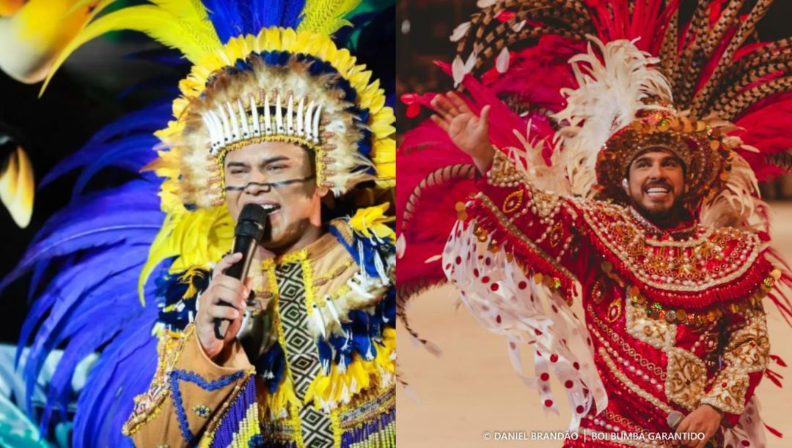 |
| 03 - Batucada ou marujada | Conjunto de brincantes que fazem o acompanhamento percussivo das toadas, sendo base para o espetáculo. |

|
| 04 - Ritual indígena | Representação artística de uma celebração ou rito indígena, fundamentado em consonância ao espetáculo do Boi-Bumbá. |
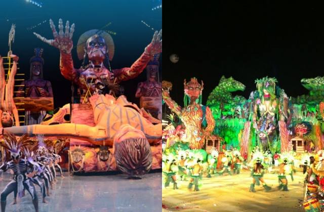 |
| 05 - Porta-estandarte | Brincante que conduz o estandarte símbolo do Boi-Bumbá. |
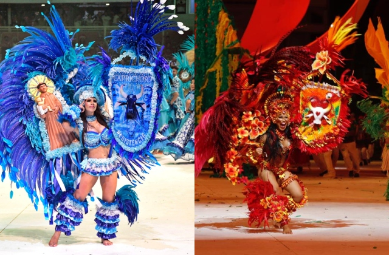 |
| 06 - Amo do boi | Brincante que representa o dono da fazenda que entoa versos dentro dos fundamentos do espetáculo. |

|
| 07 - Sinhazinha da fazenda | Brincante que representa a filha do dono da fazenda no Auto tradicional do Boi-Bumbá de Parintins. |
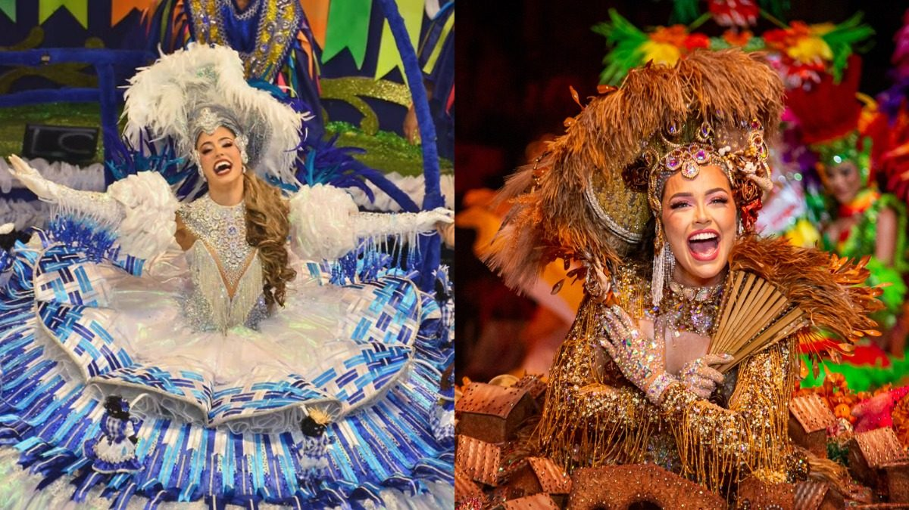 |
| 08 - Rainha do folclore | Brincante que representa a diversidade das manifestações da cultura popular brasileira. |
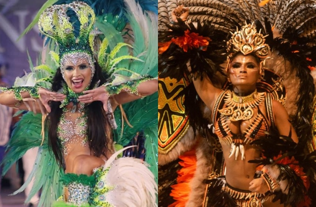 |
| 09 - Cunhã-poranga | Mulher bonita em Nheengatu, brincante que representa os povos indígenas. |
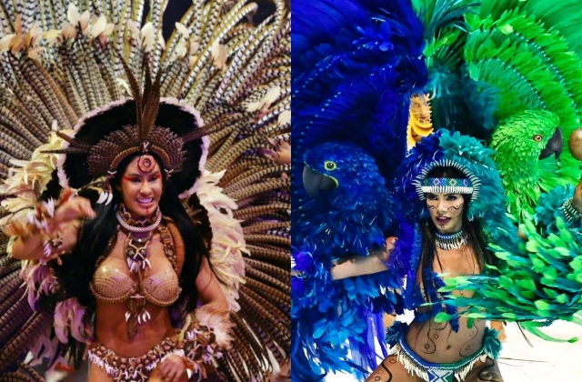 |
| 10 - Boi-bumbá (Evolução) | Brincante que representa o Boi-Bumbá na arena, desenvolvendo sua evolução cênica e coreográfica. |
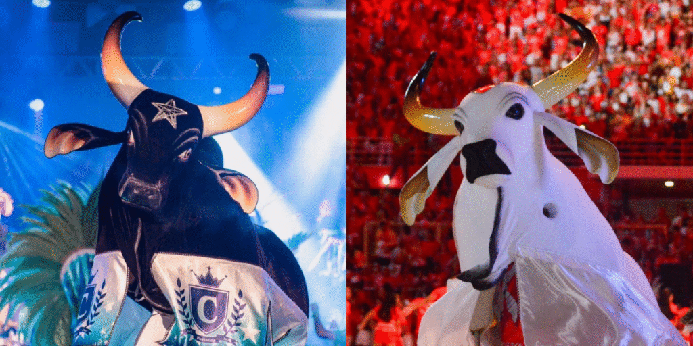 |
| 11 - Toada (Letra e Música) | Gênero musical popular do Boi de Parintins, suporte lítero-musical do festival. |

|
| 12 - Pajé | Sacerdote indígena, referência mística e mitológica. |

|
| 13 - Povos indígenas | Brincantes que representam os grupos étnicos que compõe os povos indígenas da Amazônia e/ou do território brasileiro, dentro do contexto do espetáculo do Boi-Bumbá. |
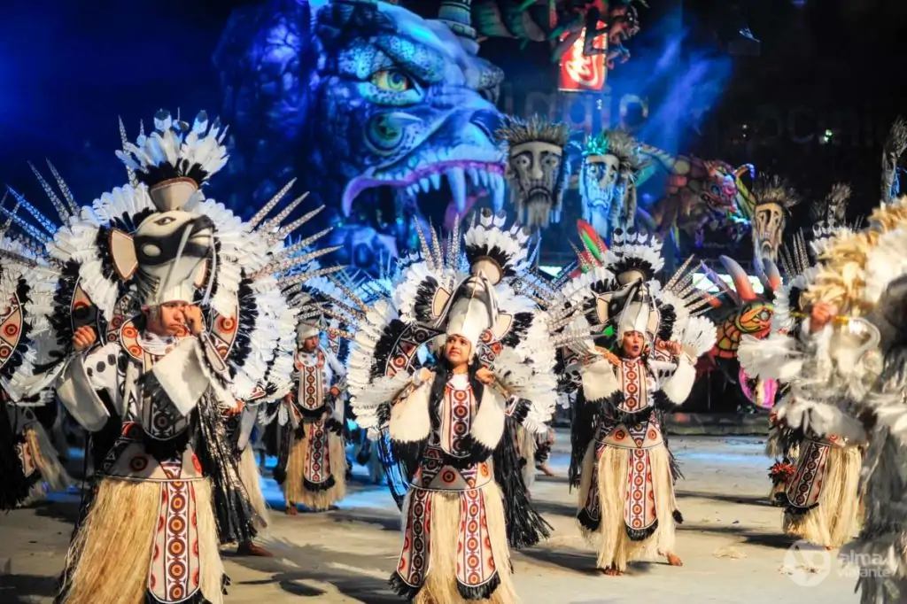 |
| 14 - Tuxauas | Brincantes que representam os chefes dos povos indígenas por meio de indumentárias que simbolizam o cocar alegórico. |
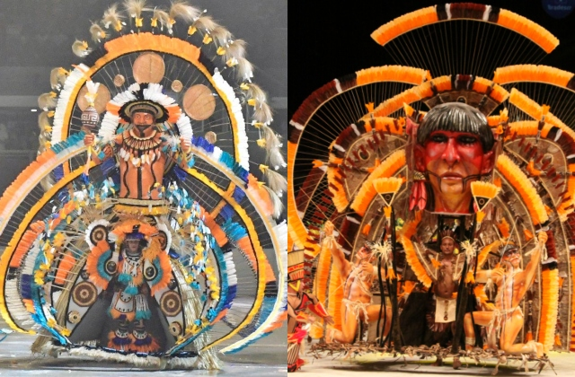 |
| 15 - Figura típica regional | Estrutura artística alegórica e cênica que representa a identidade regional do amazônida em sua diversidade. |
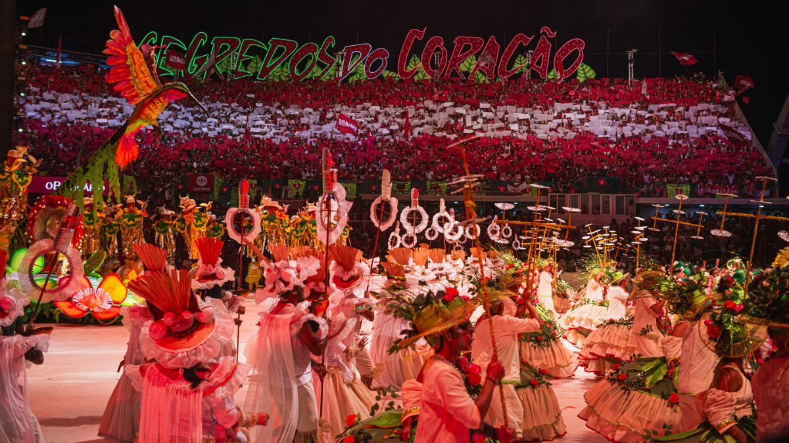 |
| 16 - Alegorias | Estruturas artísticas que funcionam como suporte cenográfico para as apresentações. |
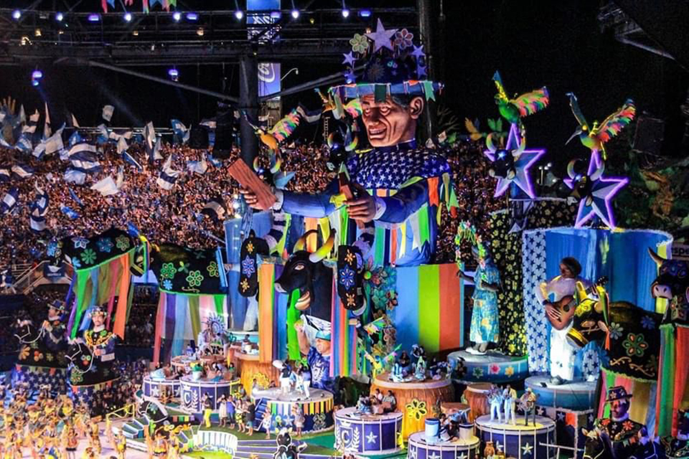 |
| 17 - Lenda amazônica | Estrutura artística alegórica e cênica. Narrativa que ilustra a cultura dos povos da Amazônia dentro do contexto do espetáculo do Boi-Bumbá de Parintins. |
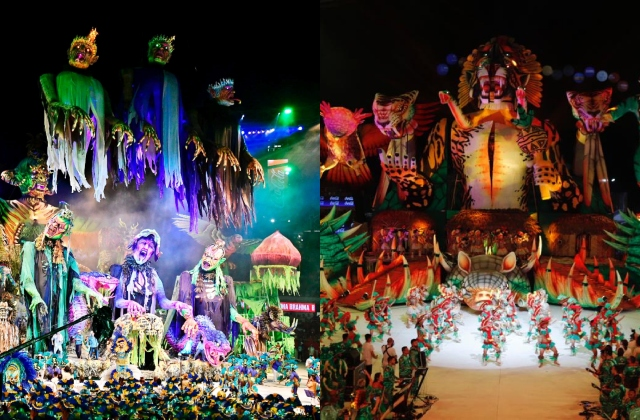 |
| 18 - Vaqueirada | Brincantes que representam a figura dos vaqueiros no contexto histórico, os guardiões do Boi-Bumbá. |
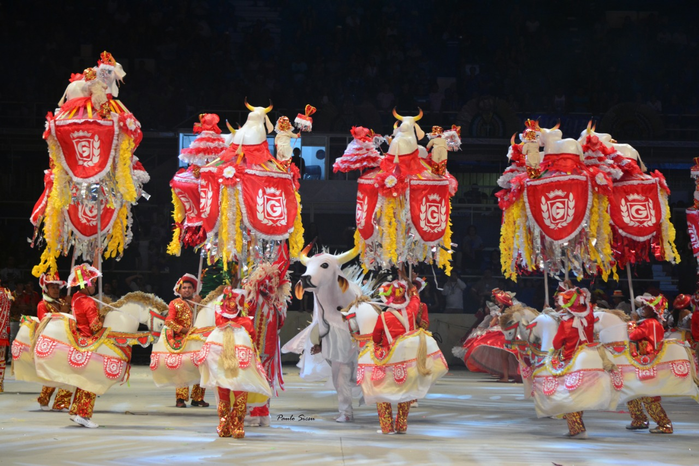 |
| 19 - Galera | Conjunto de torcedores dispostos nas arquibancadas laterais gratuitas. Massa humana que formam coreografias uníssonas e organizadas no contexto do espetáculo. |
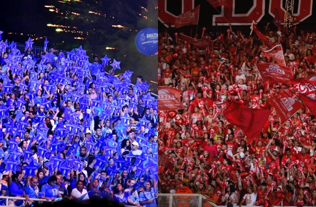 |
| 20 - Coreografia | Movimentos coreografados dos grupos de dança apresentados durante o espetáculo. | - |
| 21 - Organização do conjunto folclórico | Reunião de itens individuais, artísticos e coletivos embasados no conteúdo da noite dispostos organizadamente na arena de apresentação. | - |
Criação e Identidade
O processo de criação envolve pesquisa profunda de etnias antes da elaboração da letra e do arranjo. O compositor busca elementos que tragam "rendimento" para a encenação na arena, unindo música e alegoria.
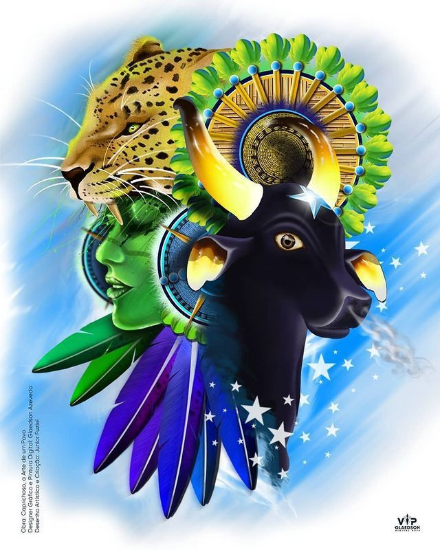
Análise de Toadas Selecionadas
Clique nos botões abaixo para ouvir e analisar a estrutura de cada composição:
BOI DE NEGRO
Boi Caprichoso
Desembarcou nas senzalas do Brasil colonial
Cultura africana transfigurada em mitos
Das lendas e histórias se fez o bumba-meu-boi
De Zulu a Zumbi
Gira, boi
Afro-parintin
Resistência de um povo Brasil
Meu tambor é de fogo, é de onça
Que dança o miolo debaixo do mito popular
É zambumba, boi-bumbá
Bumba-meu-boi, sangue África
Na minha dança e na festa
É zambumba, boi-bumbá
Bumba-meu-boi, sangue África
Na minha dança e na minha festa
É o saber ancestral nascido de ventre África
Parido, plantado, roubado e negado
Parido, plantado, roubado e negado
Que tremula o tambor
E pulsa, regando esse chão
É a festa de Cabanos
De terreiro, rua e quintal
É arte, luta, resistência e revolução
Boi de Cid, brasileiro
O batuque, o gingado
Cantoria, Pai Francisco
Gazumbá, Catirina.
Composição: Moisés Colares, Frank Azevedo, Erick Nakanome, Ricardo Linhares, Raurison Nascimento.
Assistir no YouTubeCUNHÃ TRIBAL
Boi Caprichoso
Pra grande festa na aldeia tribal
O teu corpo é brilho do Sol e da Lua
Cunhã-poranga
Ela dança ela chega preparada pra guerra
Arco e flecha
Nativa da terra
Dos munduruku dos parintintin
Da nossa floresta, do povo feliz
Traz a força das feras dos vales e serras
Guerreira Cunhã!
Ao som dos tambores e maracas
Abençoada pelos ancestrais
Cunhã-poranga chegou pra dançar
Dança cunhã-poranga na aldeia
Guerreira Cunhã!
Dança cunhã-poranga guerreira
Dança na taba, o clã te exalta
Dança cunhã tribalesca pro Sol.
Composição: Carlos Kaita, Alexandre Azevedo e Geovane Bastos
Assistir no YouTube